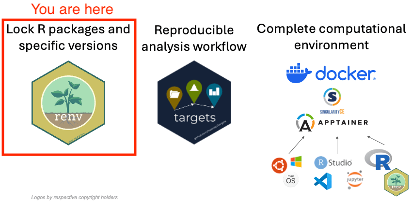
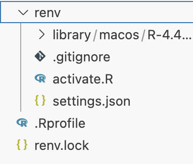

![]()
flowchart TD
A["Create project folder & set package repository"] --> B["Initialize renv: **renv::init()**"]
B --> C["Configure renv: set snapshot type to 'all' and enable Posit Package Manager"]
C --> D["Install packages (e.g., targets)"]
D --> E["Snapshot package versions: **renv::snapshot()**"]
E --> F["Test restoration: copy project, delete renv/library, run **renv::restore()**"]
click A "#create-project"
click B "#renv-init"
click C "#renv-config"
click D "#install-packages"
click E "#snapshot"
click F "#test-restore"
1. R packages version management with renv

1 Key packages summary
{renv} |
Sets up an R package library on a per-project level. Each project where you activate renv with renv::init() will have it’s own independent library with specific R package versions that will not interfere with either your default system/user libraries or with any other project. |
{pak} |
Significantly speeds up R package installation by using multiple threads to download and install both requested packages and their dependencies. Can be used to install CRAN and Bioconductor packages, as well as packages from GitHub or any other repository. Can be used independently from {renv}, or as a companion of {renv} . Using {pak} as “backend” for {renv} is still experimental and only recommended for advanced users. We do not recommend it for beginners and for this particular exercise. |
1.1 {renv}
1.1.1 What does {renv} do?
{renv} takes over the location of the R package library and the command install.packages(). After initializing {renv} for a particular project/working directory, all your package installations and removals will be handled by {renv}. From now on, whenever you use install.packages() in that project, {renv} will install the package into the project directory.
Note
Actually, {renv} will install the packages into user cache folder defined by the operating system (this is different from the default user folder for R package installation), and will “link” the packages into your project (or projects) directory(-ies). For example, you have two projects with different versions of {ggplot2}, but the same versions of {dplyr}. The {renv} packages cache will have two versions of {ggplot2} and one version of {dplyr}. Your projects however, will only contain “links” to the cache, therefore, you will not have two identical copies of {dplyr} on disk in two project directories, as they will both just point to the cached version of {dplyr} in {renv}’s cache folder. You can read more about it here
1.1.2 Under the hood of renv
When you install {renv} and run renv::init() in the current project/working directory, it creates several files and directories in your current project/working directory (see Figure 1).

renv when initialized
{renv}creates an invisible.Rprofiletext file your current project/working directory. This file may contain any R code, and whenR/RStudiois started in that directory, the commands in this file get executed.{renv}adds a linesource("renv/activate.R")which runs a script that activates{renv}for this particular project every timeR/RStudiois started in this directory.{renv}also creates anrenvfolder, where it will store all R scripts that it requires to function, and also the packages that you install for this particular project.{renv}also creates anrenv.lockfile, which stores the exact versions of R packages you install, as well as the sources where you install them from. That is, it keeps track if the package was installed from CRAN, Bioconductor, GitHub repository, or any other source.
1.2 {pak}
1.2.1 What does {pak} do?
{pak} can be used instead of R’s default install.packages() to install R packages and their dependencies faster.
It can also serve as a so-called “backend” for {renv}, that is it will help {renv} to install packages and their dependencies much faster when you, or someone who reproduces your code, such as your collaborator, use {renv} to fully restore the R package environment of a project on a new computer.
Warning
If you would like to enable {pak} as a backend for {renv}, you can find which {renv} options to set in the {renv} documentation, however, as this is still experimental, please do not use it in this tutorial, as we will not have time to debug it if something does not work.
2 Exercise
2.1 Goal
The goal of this exercise is setup a new blank project with isolated R packages library using {renv} in such a way, so that all the specific package versions can be restored on a new computer or in a new folder.
The tutorial is long and detailed, however in essence it is just a few steps. In Figure 2 you can find a summary of the steps and can click on them to get directly to the corresponding section of the exercise.
Note
You can find the repository with the expected end result of the exercise at https://github.com/e-kotov/2025-mpidr-workflows-reference-01. If you would like to skip the exercise and just see how the package restoration process with {renv} works, feel free to download/clone this repository and follow the instructions starting with the Test R packages restoration step.
2.2 Instructions
2.2.1 Create a new project folder
Create a new folder wherever you would normally create a folder for a new research project.
If you are using RStudio, use the menu File -> New Project, then select New Directory -> New Project and set the folder name and location. You may select Use renv with this project in the end of the project creation wizard, but we would advice to skip it for now, as we will set this up in the next step.
If you are using Visual Studio Code or the new Positron (the future replacement for RStudio based on Visual Studio Code), just create a folder manually and open it in the respective editor.
If you are using some other editor, follow the usual procedure you know to create a new project.
In any case, once you are ready, run the following command in the R console to make sure that the current working directory is the project directory you intended to create and use:
getwd()2.2.2 Setup packages repository
By default, your R installation probably installs packages from CRAN ( https://cran.r-project.org/ ) or from CRAN mirror hosted by RStudio/Posit ( https://cran.rstudio.com/ ). These repositories are updated every day with latest R package versions, so you never know, which version of a package you will get when you install it. You can check which repository is used with:
getOption("repos")You will probably see:
CRAN
"https://cran.rstudio.com" or:
CRAN
"@CRAN@"To have more control over which versions are installed, you may set the repository to Posit Package Manager and constrain it to a certain date. We also add the rOpenSci repository to install a certain package that is only available from there.
options(
repos = c(
"CRAN" = "https://packagemanager.posit.co/cran/2025-02-28"
)
)If you run getOption("repos") again, you should see the URLs you have entered above. If it is set, the package versions you install will always correspond to the date you used. This allows you to freeze the packages you use for your project in time and prevent installation of new versions which may break your code. You may change the date for this setting later and update the packages, test your code with newer versions and decide if you need to revert to older versions.
Note
Unlike CRAN, Posit Package Manager provides pre-compiled binaries of R packages for Linux. This is particularly beneficial for Linux users and for last steps in this tutorial, where we build containers that are also based on Linux. Typically, R packages on Linux are installed from source, which can be time-consuming, and installing pre-compiled binaries speeds up the installation process significantly.
Important
The repos option should be set before you move to the next step and initialise {renv}, as at the time of initialisation, {renv} will use the current value of the repos option. The option may be changed later, including manually in the renv.lock file.
2.2.3 Install {renv}
Install {renv} as you normally would. You should not install any other packages at this point, as after installing and initizalising {renv}, you would need to install then again, as R will start using your project directory as a package library and will not see any previously user-installed packages anymore.
install.packages("renv")2.2.4 Initialise {renv}
Initialise {renv} in the current project/working directory:
renv::init()You should get a message like this (your R and {renv} versions may be different):
The following package(s) will be updated in the lockfile:
# CRAN -----------------------------------------------------------------------
- renv [* -> 1.1.1]
The version of R recorded in the lockfile will be updated:
- R [* -> 4.4.3]
- Lockfile written to "path-to-your-project/renv.lock".
- renv activated -- please restart the R session.
Important
At this point, you need to restart the R session for {renv} to work. Do not ignore this instruction, as otherwise the rest of the steps will not work.
Feel free to double check if the {renv} related files have been created in your project, as was shown in Figure 1 in the previous section.
2.2.5 Customize the {renv} configuration
Before you proceed, a few options related to {renv} operation should be set manually.
2.2.5.1 Force {renv} to record all packages
By default, {renv} tries to automatically identify which packages you actually use in your project and adds those to the lockfile renv.lock which would later be used to restore the package versions on a new computer. It does this by scanning all *.R script files in your project/working directory and tries to find lines like library(ggplot2). Unfortunately, it does not always do it well, and you may also have another way of loading the packages that {renv} does not recognize.
Therefore, it is better to just force {renv} to keep track not just the packages it “thinks” you use, but all packages you install while working with the current project. To do that, run the folliwing code in the R console:
renv::settings$snapshot.type(value = "all")This will change the setting in the renv/settings.json file. You could of course also open the file in editor and change the setting manually. You can find more information on this setting in the official {renv} documentation.
2.2.5.2 Instruct {renv} to use Posit Package Manager
We have already set the repos option above to the Posit Package Manager, but it is also worth enabling the corresponding option in {renv} with:
renv::settings$ppm.enabled(value = TRUE)2.2.6 Try installing packages
Now you can try to install a new package to see if {renv} works as expected. In the next exercise, we will need the {targets} and {usethis} packages, so we can try installing them:
install.packages(c("targets", "usethis"))You should see in the R console:
The following package(s) will be installed:
- backports [1.5.0]
...
- targets [1.10.1]
...
- yaml [2.3.10]
These packages will be installed into "path-to-your-project/renv/library/macos/R-4.4/aarch64-apple-darwin20".
Do you want to proceed? [Y/n]: Agree and wait for the packages and their dependencies to be installed.
You can check that the {targets} package is installed by trying to load it:
library(targets)
Note
If you have not had targets installed prior to starting this exercise, it does not exist in your default user R library, but only exists in the {renv} R package cache and in the current project directory. If you would like to check this, you can start another R/RStudio session in a differnt project directory and try to load targets there. It should fail, as there is no targets package in the default user R library.
Now go to https://github.com/jschoeley/openscience25/tree/main/layer2-communal/example_2-1/code, find the relevant R script, and check all the packages that are needed to run Jonas’s code and install them into the project just like you have just done with targets.
Note
Notice that some packages are installed from CRAN, but there is one package that is installed from https://ropensci.r-universe.dev. This is not a problem at all for {renv}, as it is able to memorise where each package is coming from, even if it is from multiple repositories.
Hint
You basically need all lines from https://github.com/jschoeley/openscience25/blob/main/layer2-communal/example_2-1/code/00-install_dependencies.R except for the last three where Jonas saves the package list to a csv file. You do not need it, as we are using {renv} to manage packages.
2.2.7 Save the package versions into lockfile
You can install and remove packages as usual while working with your project. Whenever you are done with testing your code and are certain that the installed packages are suffient to reproduce your code, you can “lock” the package list and their versions with {renv}.
To check the current status of the R package versions snapshot, you can run the following command:
renv::status()You should get something like this:
The following package(s) are in an inconsistent state:
package installed recorded used
askpass y n y
backports y n y
....
yaml y n y
zip y n y
See `?renv::status` for advice on resolving these issues.As you can see from the recorded column, none of the package versions are currently recorded (snapshotted) in the renv.lock lockfile. To save the package list and their versions into the lockfile, you can run the following command:
renv::snapshot()You may get a warning message for some missing dependencies, which you may have to install manually. For example:
The following required packages are not installed:
- cpp11 [required by igraph]
- progress [required by readxl, vroom]
- RcppArmadillo [required by bayesm]
Consider reinstalling these packages before snapshotting the lockfile.If you get something like this, you should install the missing package(s) and then run renv::snapshot() again.
install.packages(c("cpp11", "progress", "RcppArmadillo", "qs2"))
renv::snapshot()Then check the status again:
renv::status()You should repeat this until after running renv::status() you get:
No issues found -- the project is in a consistent state.
Note
You can also manually open the renv.lock file in the editor and search for pacakges such as targets to see if they were snapshotted successfully.
2.2.8 Test R packages restoration
In the steps above you have created a project directory with fully isolated independent R package library. Now is the time to do a simple test, whether you can restore the R package environment of a project on a new computer, or at least in a new folder.
To quickly test with the new folder, close your R/RStudio (or whichever other editor you are using) and create a of the the project folder in a new location on your computer. Once copied, manually delete the renv/library folder at this new location. Now open the new project folder with the deleted renv/library folder in your editor.
Note
Instead of using your own project, you can also use the https://github.com/e-kotov/2025-mpidr-workflows-reference-01 repository for the test. Just download/clone it to your computer and proceed with the steps below.
Once R starts in this new project directory you should see the following message:
OK
- Installing renv ... OK
- Project 'path/to/your/project-copy' loaded. [renv 1.1.1]
- One or more packages recorded in the lockfile are not installed.
- Use `renv::status()` for more details.This means that R found the .Rrofile file in the project root and exectuted all of the commands there. The first command was to run all the code in renv/activate.R which would automatically install {renv} on a new computer if it was not installed yet. It has also checked briefly the installation status of the packages recorded in the renv.lock file against the project package library, ignoring any packages installed by the user into the system wide user R packages library.
Feel free to run renv::status() to check the status of the packages, but this is optional.
To restore all pacakge versions, run renv::restore(prompt = FALSE). Once the process finishes, you should be able to check the status again:
renv::status()In the end you should be able to get No issues found -- the project is in a consistent state. when running renv::status().
Note
You can also manually check if the renv/library folder has been created in this new copy of the original project and if it contains subfolders for the packages.